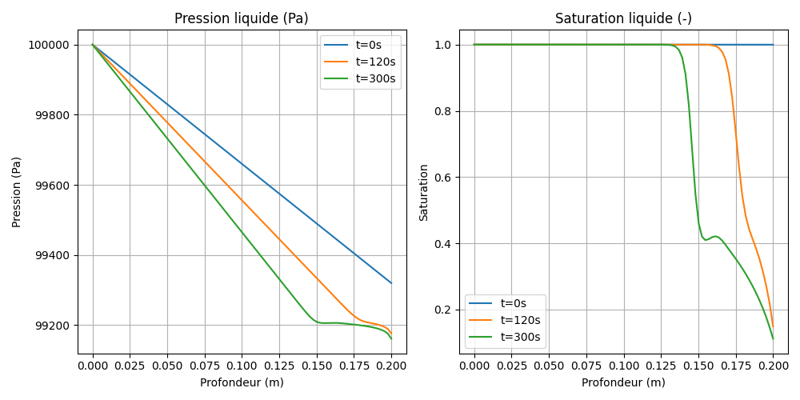

Modèle M1 — Équation de Richards (Écoulement liquide 1D)
Fichiers sources :
src/Models/ModelFiles/M1.c·test_examples/M1/M1Auteurs du modèle : P. Dangla (Université Gustave Eiffel)
Table des matières
- Contexte et objectif
- Hypothèses
- Variables et notation
- Modèle mathématique
- 4.1 Équation de conservation
- 4.2 Loi de flux (Darcy généralisée)
- Conditions aux limites et initiales
- Cas test : drainage d'une colonne de billes (
test_examples/M1) - Discrétisation numérique
- Description pas-à-pas des fichiers
- 8.1 Fichier de pilotage
test_examples/M1/M1 - 8.2 Fichier modèle
src/Models/ModelFiles/M1.c - Références bibliographiques
1. Contexte et objectif
Le modèle M1 résout l'équation classique de Richards unidimensionnelle. Cette équation différentielle partielle non-linéaire représente le mouvement de l'eau dans un milieu poreux non saturé, sous l'action de la gravité et des forces capillaires, en supposant que la phase gazeuse (l'air) est à pression atmosphérique constante.
Ce modèle est extrêmement utilisé en hydrologie, hydrogéologie et génie civil pour prédire l'infiltration de la pluie dans les sols, le drainage ou la remontée capillaire.
graph TD
A["Gravité (g)"] -->|Entraînement vers le bas| B["Écoulement Non-Saturé<br>(Loi de Darcy)"]
C["Succion Capillaire<br>(Pression négative)"] -->|Rétention dans les pores| B
B --> D["Mise à jour du profil de saturation S_l(x,t)"]
2. Hypothèses
- Monophasique "actif" : L'écoulement de l'air est négligé ; on assume que l'air interstitiel est à la pression interne constante \(p_g\) = 1 atm. La modélisation est centrée exclusivement sur le transfert de la phase liquide.
- Matrice solide rigide : La déformation du sol ou des matériaux est ignorée. La porosité \(\phi\) est constante.
- Isotherme : La température est uniforme, affectant de manière constante la viscosité de l'eau et sa masse volumique.
- Validité de la loi de Darcy : S'applique pour la vitesse de phase de l'eau filtrant dans la matrice, étendue au non-saturé par une perméabilité relative \(k_{rl}\) liée au degré de saturation liquide.
3. Variables et notation
Le modèle supporte 1 équation scalaire dont l'inconnue est la distribution spatiale de la tension hydrique ou pression liquide.
Inconnue primaire
| Symbole | Signification | Unité |
|---|---|---|
| \(p_l\) | Pression interstitielle de phase liquide | Pa |
Variables de comportement et constantes
| Symbole | Signification |
|---|---|
| \(p_c\) | Pression capillaire constante (\(p_g - p_l\)) |
| \(S_l\) | Saturation liquide (issue de \(p_c\)) |
| \(k_{rl}\) | Perméabilité relative liquide (dépend de \(p_c\)) |
| \(m_l\) | Masse locale en eau stockée : \(\phi S_l \rho_l\) |
4. Modèle mathématique
4.1 Équation de conservation
La variation de la masse d'eau locale est égale à la divergence des flux massiques (conservation de la masse d'eau liquide sans terme de source/puits) :
soit : $\(\rho_l \phi \frac{\partial S_l(p_c)}{\partial t} + \nabla \cdot \mathbf{W}_l = 0\)$
4.2 Loi de flux (Darcy généralisée)
L'eau s'écoule de son potentiel de charge hydrostatique supérieur vers le plus faible.
Ici, \(\mathbf{g}\) est le vecteur de gravité terrestre et \(\mu_l\) la viscosité dynamique. La non-linéarité provient du couplage fort existant : le mouvement dépend de \(k_{rl}\), qui s'effondre lorsque le milieu se draine et se désature (baisse de \(S_l\)).
5. Conditions aux limites et initiales
La condition initiale requiert de mapper le milieu complet par un champ de pression \(p_l\). S'agissant souvent d'une colonne d'eau libre imposant une charge hydrostatique, ce champ peut être graduel ("affine"). Les conditions limites standards fixent soit la pérennité aux parois imperméables (Flux nul = gradient bloqué), soit une pression externe constante gérée par une "Condition de Dirichlet".
6. Cas test : drainage d'une colonne de billes
Le dossier test_examples/M1/ contient l'exécution de référence, modélisant le drainage par gravité d'une colonne de billes de porosité importante (38 %), représentant un milieu pulvérulent très perméable (ex: graviers, billes de verre).
Paramètres de simulation
| Paramètre | Valeur |
|---|---|
| Géométrie / Maillage | Plan 1D (1 plan). Longueur = 20 cm, 100 mailles |
| \(\phi\) (Porosité) | 0.38 |
| Perméabilité \(k_{\text{int}}\) | \(8.9 \times 10^{-12}\) m² (milieu très perméable) |
| Gravité \(g\) | -9.81 m/s² |
| Pression Gaz \(p_g\) | \(10^5\) Pa |
La courbe d'interaction macroscopique est chargée via le terme Curves = billes, injectant les coefficients empiriques de conductivité liés à cette granulométrie de billes.
Résultats et commentaires physiques du test
Si l'on analyse l'historique d'évolution du solveur (les fichiers de coupe .t0, .t1, .t2 évalués à \(t=0, 120s, 300s\)), le modèle reproduit fidèlement la phénoménologie du drainage hydrogravitaire :
- L'État Initial (\(t=0\)) : Le champ est initié par type
affinedégressif, simulant l'étagement de la pression dans l'axe de la colonne de la base vers le haut. - Phase Transitoire de Vidage : Sans contrainte qui vienne retenir l'immense majorité de la masse liquide face à la forte perméabilité \(k \sim 10^{-12}\), l'eau percole à vitesse modérée vers le fond. En conséquence de la gravité vers les x-négatifs, la saturation de la colonne dans sa cime s'effondre drastiquement (\(S_l \to S_{residuel}\)).
- Seuil Capillaire Final : Lorsque le drainage stoppe, un équilibre entre le poids de la colonne d'eau raréfiée et la force de succion / tension capillaire résiste à un effritement total de la masse liquide. Le sommet de la colonne maintient un degré statique constant (eau pendulaire).

(Le graphique ci-dessus présente l'évolution spatio-temporelle : on observe l'assèchement progressif de la partie haute de la colonne, la saturation résiduant s'établissant par équilibre hydrostatique à l'état final \(t=300s\)).
7. Discrétisation numérique
La discrétisation se repose sur une approche spatiale robuste via la méthode des Volumes Finis Centrés (FVM.h). Le modèle évalue le flux échangé non plus individuellement au noeud, mais par la section d'arête inter-volume, et l'associe à un pas de temps (Euler Implicite).
Un mécanisme de décentrement amont (upwind) peut être activé via la constante logicielle schema, ce qui améliore drastiquement la stabilité en contexte très advectif, en forçant l'évaluation de la mobilité \(k_{rl}(S_l)\) selon le volume "donneur" du fluide, et non une simple moyenne des deux pressions (M1.c - Ligne 223).
8. Description pas-à-pas des fichiers
8.1 Fichier de pilotage test_examples/M1/M1
- Geometry & Mesh : Ouvre un vecteur
1 plansimple, suivi de son maillage à géométrie découpant le bloc de 20 centimètres d'épaisseur en 100 tranches (100 1). - Material : Pointe vers le module mathématique compilé
Model = M1. L'explicitation des constantes requises pour l'équation de Richards s'effectue ici (porositéphi, densitérho_l, gravité pure). - Fields & Initialization : Fournit une fonction spatiale (
Type = affine) avec pour valeur à l'origine locale1.e5et un gradient-3400. Ceci recrée la loi hydrostatique : \(P_l(z) = 1.e5 - 3400 \times z\), pré-réglant harmonieusement et empiriquement le profil d'étages de vide. - Boundary Conditions : La
Reg = 1fixe une limite imperméable ou à pression statique au sommet ou au bas de la colonne en figeant l'équation au travers de la constante nodale. - Objective Variations : L'indication booléenne
p_l = 10dicte au gestionnaire adaptatif de pas de temps de l'exécutable BIL que la pression locale d'hydratation ne doit pas sauter de plus de \(10\) Pa entre deux séquences transitoires, assurant qu'un drainage subit ne brise pas par à-coups la méthode Newtonienne.
8.2 Fichier modèle src/Models/ModelFiles/M1.c
- Architecture Globale (Lignes 14-45) :
- Modèle simplissime à 1 équation
E_liqpour 1 inconnueI_p_l. Les registresM_l(),W_l()stockent l'information masse/flux nodale. ComputeInitialState(Ligne 151) :- Extrait les paramètres de la colonne (
gravite,rho_l). Établit instantanément pour les points d'intégration le volume de fluide contenu via l'appel de surface à la courbeSATURATION(). - Charge le flux vecteur matriciel d'écoulement sous la double impulsion gravitaire et le gradient de la pression de gradient hydraulique existant sur la maille zéro et une.
- Loi Explicite Transitoire (
ComputeExplicitTerms- Ligne 200) : - Si
schema = 1se révèle défini, le code injecte un traitement "upwind" pour capter la pression de transfert (d'un inter-noeud au noeud aval de Darcy). La perméabilité activeK_lest rafraîchie en fonction. - La Jacobienne de Diffusion (
TangentCoefficients- Ligne 471) : - Re-évalue la différentielle du terme de stockage (matrice de masse proportionnelle à \(\partial S_l / \partial p_c\)) et le module de l'opérateur de divergence flux. Cette matrice
c[i*nn + j]va conditionner localement comment un incrément d'eau change l'inconnue spatialep_là proximité. - Bilan Analytique (
ComputeResidu- Ligne 333) : - L'étape de contrôle : injecte dans le résidu \(R\), l'écart analytique exact entre la perte de volume de liquide
M_ln - M_lface à l'advection nettedt*surf*W_l, ce qui valide au noeud que la conservation stricte d'eau a été observée pendant la chute.
9. Références bibliographiques
- Richards, L. A. (1931). Capillary conduction of liquids through porous mediums. Journal of Applied Physics, 1(5), 318–333. — L'article de base dérivant l'équation transitoire non saturée des sols.
- Van Genuchten, M. Th. (1980). A closed-form equation for predicting the hydraulic conductivity of unsaturated soils. Soil Science Society of America Journal. — Base universelle pour la liaison de la saturation avec la pression capillaire dans ces résolutions FVM.
- Celia, M. A., Bouloutas, E. T., & Zarba, R. L. (1990). A general mass-conservative numerical solution for the unsaturated flow equation. Water Resources Research, 26(7), 1483–1496. — Explique la robustesse et le comportement du code FVM couplé avec une discrétisation temporelle implicite (Newton-Raphson) face aux asymétries de saturation.